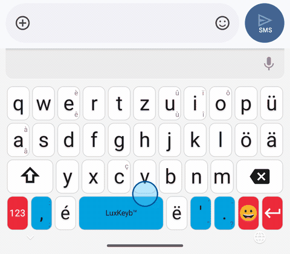
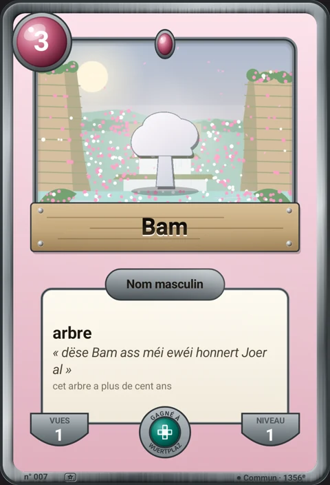
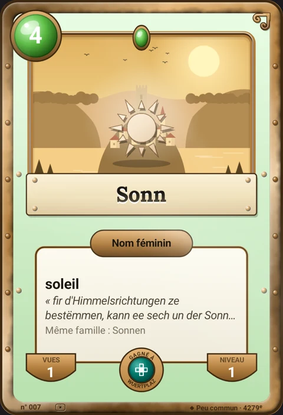
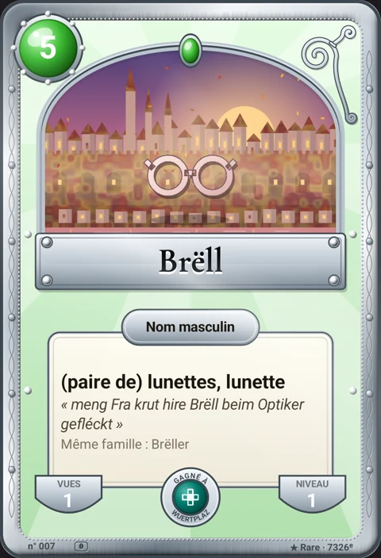
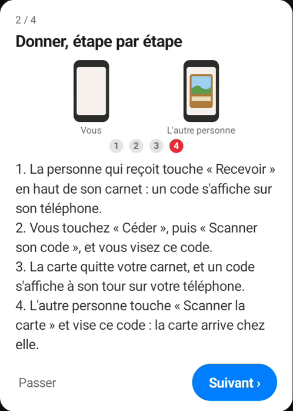
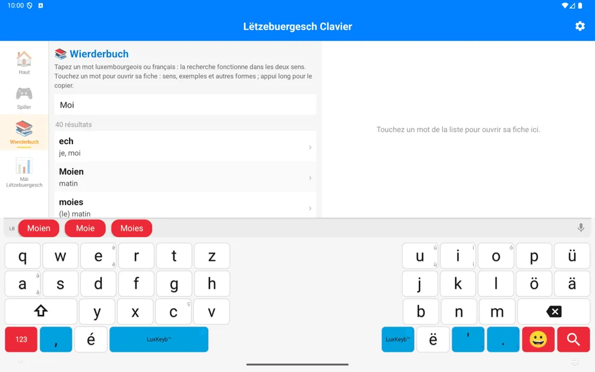
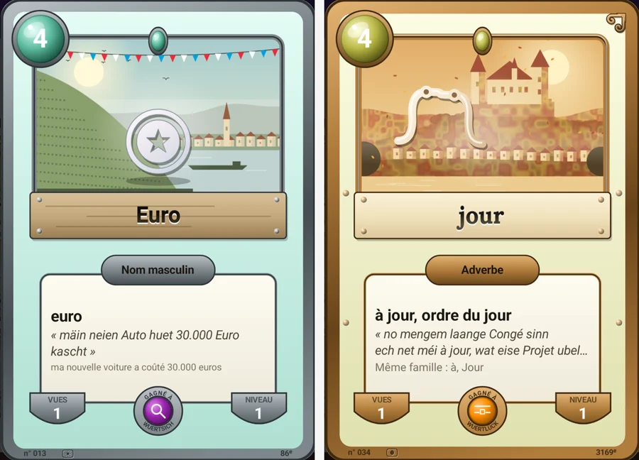

Écrire en luxembourgeois devient encore plus simple
En un mois, le clavier a appris à vous écouter, à rattraper vos fautes de frappe et à prendre toute la place d'une tablette. Voici ce qui change pour vous.
Parlez, le texte s'écrit
Touchez le micro à droite de la barre de suggestions et parlez en luxembourgeois. Le texte s'écrit pendant que vous parlez, avec la ponctuation et les majuscules, et le micro se referme seul quand vous vous taisez.
« Op der Kiermes iessen ech ëmmer Gromperekichelcher mat Äppelkompott. »
La reconnaissance est assurée par LuxASR, le service de l'Université du Luxembourg. Avant la première dictée, un écran vous explique où part votre voix ; rien n'est envoyé avant que vous acceptiez. Ce que vous tapez reste sur votre téléphone.
Le clavier rattrape vos doigts pressés
Un pouce qui glisse, deux lettres inversées, un espace oublié : la barre propose maintenant le bon mot.

- Deux mots collés se séparent, sans couper les mots composés comme « Schoulbus ».
- La touche voisine est reconnue : « haud » donne d'abord « Haus », parce que le s touche le d.
- La lettre doublée tapée une seule fois est retrouvée : « ales » donne « alles ».




Des cartes pour découvrir le luxembourgeois : chaque mot gagné en jouant devient une carte, avec son sens, une phrase du dictionnaire officiel et un paysage du pays. Plus le mot est rare, plus le métal est noble, de l'étain à l'or.
Des cartes à collectionner et à offrir
Vos cartes se rangent dans un carnet, qui est devenu un vrai album.
- Des séries à compléter : les nombres, les dessins, les jeux, les paysages. Une case vide donne un indice, jamais la réponse.
- Offrir une carte de la main à la main : les deux téléphones côte à côte, un code à scanner, et la carte passe d'un carnet à l'autre. Elle quitte le vôtre, comme une vraie carte qu'on tend.
- Partager une carte en image, avec le lien pour installer le clavier.
- Un sceau sur les mots appris, et une petite plume sur ceux que vous avez tapés vous-même dans un vrai message.

Le clavier à la taille d'une tablette
- Des touches plus hautes, et un clavier scindé en deux en paysage, à portée des pouces.
- Avec un clavier Bluetooth ou un étui-clavier, seule la barre de suggestions reste à l'écran.
- Les jeux à grille et le dictionnaire s'ouvrent côte à côte : la grille d'un côté, les mots de l'autre.
- Tourner l'écran ne fait plus perdre la partie.

Tous les nombres de 0 à 100
Le jeu des nombres couvre désormais toute la centaine. En Facile, il montre le nombre seul ; ensuite, une multiplication ou une addition. Vous apprenez à écrire « sechsafofzeg » et « sechsandrësseg », et à savoir pourquoi l'un perd son n.
Prêt en moins d'étapes
Le bouton d'activation ouvre directement le bon écran d'Android, l'appli vous dit quoi répondre à son avertissement, et le premier mot que vous tapez suffit à tout valider.
On se voit à la Fierkelsmaart
En avril 2027, le Lëtzebuergesch Clavier aura son stand à la Fierkelsmaart. Venez essayer le clavier, tester la dictée vocale et nous dire quels mots manquent encore. La date exacte et l'emplacement du stand suivront dans une prochaine newsletter.
Et pour le plaisir des yeux
Chaque carte ouvre une fenêtre sur un lieu du pays, de la Rout Bréck à la Musel. Elle se souvient de la saison où vous l'avez gagnée : neige en hiver, feuilles en automne, feux d'artifice à la Fête nationale. Penchez le téléphone : le paysage prend du relief et la lumière court sur le cadre, de l'étain des cartes communes à l'or des très rares.

Vous le parlez. Maintenant, vous l'écrivez.
Mettre à jour sur Google Play